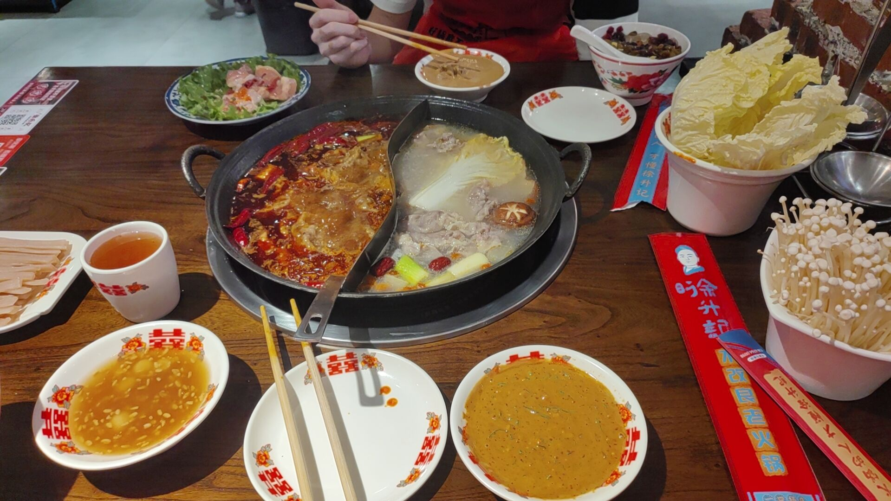
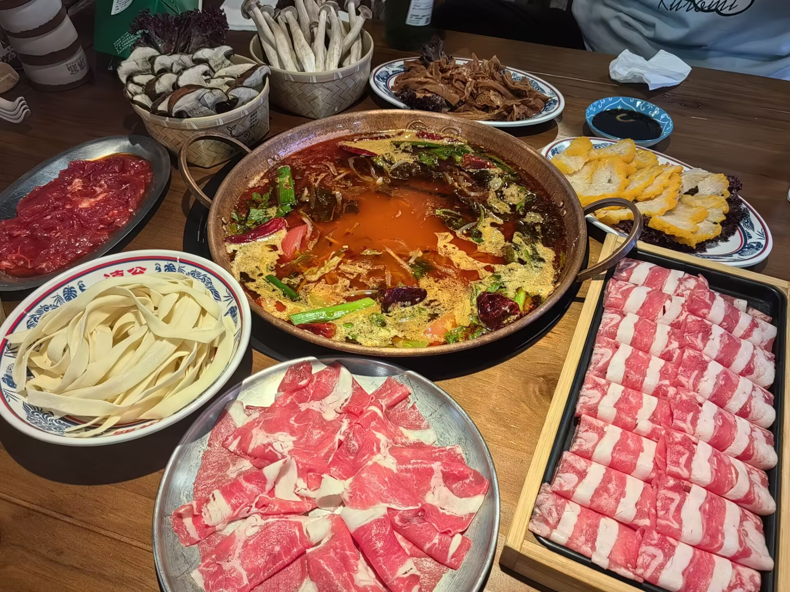

1.火锅永远是我的最爱！我在这里强烈推荐徐升记不改良老火锅，味道没毛病。还有重庆小天鹅火锅，他的菠菜小包子是我的最爱。
右面是云南的特色，酸菜菌子火锅，左上角的见手青十分瞩目。我感觉每种蘑菇都有它特有的味道，第一次吃有点吃不惯。见手青是真的鲜美，推荐。酸菜锅底也很有特色。
美食鉴赏
1.火锅永远是我的最爱！我在这里强烈推荐徐升记不改良老火锅，味道没毛病。还有重庆小天鹅火锅，他的菠菜小包子是我的最爱。
右面是云南的特色，酸菜菌子火锅，左上角的见手青十分瞩目。我感觉每种蘑菇都有它特有的味道，第一次吃有点吃不惯。见手青是真的鲜美，推荐。酸菜锅底也很有特色。
2.烧烤，烤肉是我的第二心头好。左边是在自家阳台，自己买肉，切肉，腌肉，串肉，烤肉的成果，吃着自由且放心。
右边是一家云南自助烤肉，物美价廉，薄荷腌肉十分有特色，还有蘸料叫做“蘸水”，比如百香果蘸水，辣椒蘸水。因为云南地处偏远，盐等物资不好运输。炒菜时如果直接加调料，容易粘在锅壁上浪费。所以做饭不放调料，出锅后直接蘸着吃。
3.左边是我非常喜欢的一家四川小菜，叫点兵点将，份量小，偏贵，但是很好吃。我最喜欢他的罐罐牛肉米线和爆浆铁板豆腐，香迷糊了。
右边是贵贵的漂亮饭，是威海的一家铁板烧。他家的炒饭，蓝莓鹅肝，黑猪排都是挺好吃的，除了贵，其他都很好。
4.这是之前网上很火的街头牛排，卖相很不错，味道一般，价格十分便宜。
我觉得最好吃的牛排当属东方豪客。在我还在上初中的时候，奶奶经常带我去东方豪客解馋，回想起来，对一个不识字的农村老人来说，那里太远太贵了。现在非常怀念奶奶对我的疼爱。
5.甜品大放送。左图是之前网上很火的搪瓷盆草莓蛋糕。真的很好吃啊啊啊啊啊啊啊，都给我去吃，草莓的香味无与伦比（冬天应季最好吃）。
右边是KFC限时推出的巨型蛋挞。对于超爱吃KFC蛋挞的我来说，这就是个美味炸弹（当然也是个碳水炸弹），相对小蛋挞，划算，一个人吃不下。